Практичні курси · журнал «ДентАрт» 2013 №2 (71)
Реставрація за розрахунком: верхні латеральні різці аномальної форми
«RESTORATIONS BASED ON MATHEMATICAL PRINCIPLES» — ABNORMAL SHAPE OF UPPER LATERAL INCISORS
Бери вершину і матимеш середину.
Григорій Сковорода
Ця стаття має свою передісторію. 2007 року у Британському стоматологічному журналі було опубліковано дослідження групи авторів з Тегеранського університету, які вивчали стандартизовані фотографії студентів з естетичною усмішкою для встановлення залежності ширини верхніх латеральних різців від принципу золотої пропорції. Висновок проведеного дослідження був однозначним — немає даних, які б підтверджували, що золота пропорція повинна вважатися обов'язковою при створенні простору для відновлення відсутніх латеральних різців або тих, що мають аномальну форму.7
На цю публікацію листом до редактора відгукнувся Едді Левін, який у 1978 році першим опублікував застосування принципу золотої пропорції для планування фронтальної естетики зубних рядів.8, 12 Він написав, що була опублікована низка праць, які підтверджують правильність його концепції (окремі негативні публікації були, але їх автори примітивно уявляли практичне застосування методу). І тисячі стоматологів у всьому світі користуються його методом візуального контролю над дотриманням пропорційності верхніх передніх зубів за допомогою шаблонів і циркуля.9
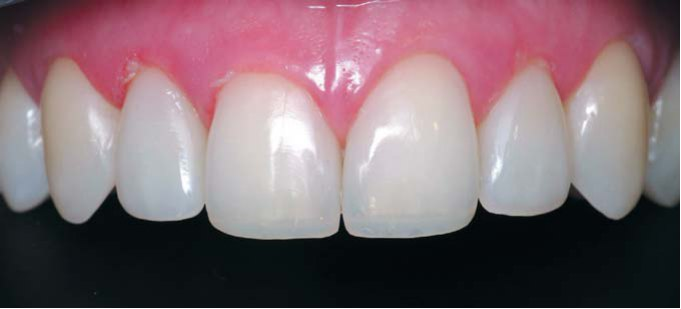
Інноваторові застосування принципу золотої пропорції в реставрації зубів відповів Андрій Астахов, який був знайомий з нашим методом розрахунку зубного ряду по журналу «ДентАрт» (і, як ми сподіваємося, використовував його в практиці). Він написав, що є і такий метод, коефіцієнти якого відрізняються від коефіцієнтів золотої пропорції, і подав фрагмент з нашої статті,2 що описує послідовність розрахунку зубного ряду.6
Андрієві Астахову відповів сам Едді Левін. Він написав, що вважає формулу Радлінського важкою для розуміння і не знайшов жодних публікацій автора (їх не було англійською, усі публікації були українською і російською мовами). І взагалі строга симетрія і пропорційність зустрічаються в природі дуже рідко, тому відхилення від них сприймаються природними або як певний шарм.10
За допомогою Андрія Астахова ми підготували і опублікували Едді Левіну відповідь, яка описувала коефіцієнти пропорційності для фронтальних ділянок як верхньої, так і нижньої зубних дуг.4 А завершили публікацію словами, що розрахунок зубного ряду дає уявлення про ідеальний результат, але оскільки реставрації виконуються прямим способом, то завжди будуть деякі відхилення від розрахункового уявлення, які нададуть зубам, що реставруються, необхідних природності і шарму.11
Ірфан Ахмад помітив публікацію Андрія Астахова і включив автора методу розрахунку зубного ряду в список критикованих за математико/геометричний підхід до планування естетики: Вільямс (1914), Ломбарді (1973), Престон (1993), Гіллен (1994), Сноу (1999) і Ворд (2001), а наші коефіцієнти пропорційності назвав «золотими коефіцієнтами» за аналогією із золотою пропорцією.5
Сам Ірфан Ахмад — автор теорії естетики, що ґрунтується на сприйнятті, згідно з якою естетика має бути спланована так, щоб зміни в дизайні зубів були сприйняті пацієнтом за участю стоматологічної команди. Тому він і критикує теорії естетики, які ґрунтуються на математиці і на морфофункціональному підході.
Математичний підхід, що базується на принципі золотої пропорції, не виключає застосування у фронтальній естетиці підходів теорії сприйняття, а навпаки, встановлює прораховані параметри, які готують пацієнта до позитивного сприйняття зміни дизайну обличчя зі зміною форми і розмірів передніх зубів. Естетика — це потім, наприкінці, буде враженням, а спочатку в основі естетики лежить чиста математика! Що ми і спробуємо продемонструвати клінічним прикладом реконструкції верхніх латеральних різців аномальної форми…
Реконструкція верхніх латеральних різців аномальної форми
Гармонія фронтальної ділянки верхнього зубного ряду відсутня, її елементи розбалансовані: треми і діастема замість правильних контактних поверхонь з контактами, що повторюють лінію ріжучих країв… Немає симетричності і пропорційності коронок верхніх передніх зубів, але особливий дисонанс у фронтальну естетику вносить аномальна форма латеральних різців, утворюючи значні горизонтальні амбразури на контактах з іклами і центральними різцями.
Діагностичні рентгенівські знімки засвідчили, що у латеральних різців аномальної форми дентин має менші розміри при звичайній товщині шару емалі. У центральних різців визначається тонка емаль по медіальних контактних поверхнях.
За відображенням в оклюзійному дзеркалі, встановленому на премоляри, можна припустити наявність стирання ікол і ріжучих країв центральних різців з втратою висоти коронок (припущення має бути підтверджене наявністю відкритого дентину по рвучих горбиках і ріжучих краях, що повинно бути видно на знімках по осі зубів.5
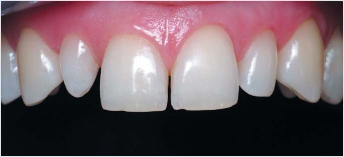
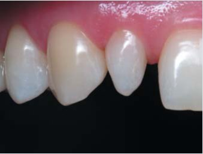
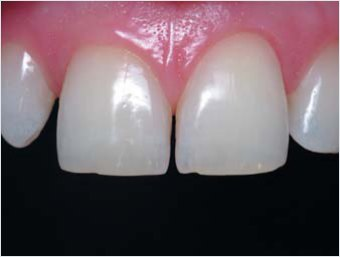
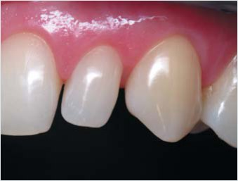
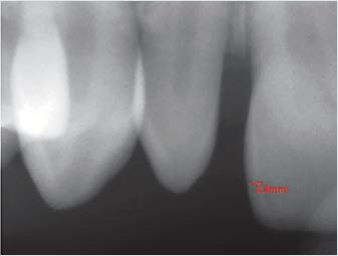
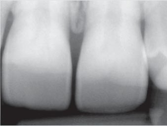
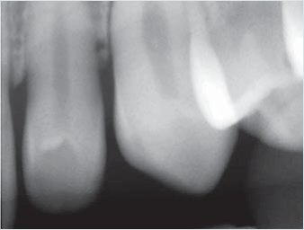
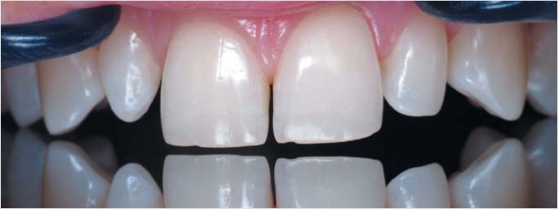
До проведення діагностичних процедур, які вимагають певного часу і можуть призвести до пересихання зубів, було визначено колір коронок зубів: візуально за шкалою еталонів кольору і за допомогою спектрофотометра. Коронки ікол відповідають еталону А3, центральні різці і лівий латеральний різець — еталону В2, спектрофотометром для кожної коронки визначені світлота L, насиченість С, колірний тон H. Як свідчить досвід, колір таких еталонів можна відтворити, якщо для імітації предентину використати яскравий білий відтінок високої опаковості, для імітації основного дентину — А3,5 опаковий мікрогібридного композиту, для імітації основної емалі — відтінок В2 нанокомпозиту і для імітації поверхневої емалі — жовтий прозорий нанокомпозиту. Усі 4 відтінки слід скласти в топографії відповідних тканин зуба, що реставрується, і тоді колір реставрованого зуба отримаємо автоматично (біоміметичний спосіб досягнення кольору зубів, що реставруються).
Розрахунок фронтальної ділянки зубного ряду
Визначити оптимальну ширину латеральних і центральних різців для даної довжини зубної дуги можна в такій послідовності:2
- вимірювання штангенциркулем довжини верхньої зубної дуги від ікла до ікла (чотири виміри по будь-яких фіксованих точках на рівні контактних пунктів);
- вибір золотого коефіцієнта пропорційності між латеральним і центральним різцями (стандартний золотий коефіцієнт — 1,3);
- визначення ширини латеральних різців шляхом ділення довжини фронтальної ділянки зубної дуги на суму золотих коефіцієнтів різців;
- визначення ширини центральних різців множенням ширини латеральних різців на золотий коефіцієнт пропорційності;
- перевірка отриманої ширини латеральних і центральних різців у зубному ряду за допомогою штангенциркуля (приблизне визначення локалізації контактів між різцями).
Оцінка ширини передніх зубів
Спочатку слід оцінити, як розміри верхніх передніх зубів співвідносяться зі стандартними розмірами коронок зубів у 3-х напрямках: висота, ширина і товщина.3 Для цієї початкової клінічної ситуації головними є дані ширини коронок зубів (висота коронок різців тут вторинна, вона легко встановлюється за ступенем стирання ріжучих країв). Товщина коронок, їх вестибуло-оральний розмір, візуально не змінений.
Виміряна штангенциркулем ширина правого і лівого ікол становила однакову величину 7,5 мм (повністю відповідає стандартній ширині верхніх ікол).
Ширина латеральних різців аномальної форми підлягає визначенню шляхом розрахунку верхньої фронтальної ділянки зубного ряду…
Ширина правого і лівого центральних різців дорівнює 8,1 мм і 7,9 мм відповідно (це значно менше, ніж стандартна ширина центральних різців 8,5 мм). Борозна по ріжучому краю обох центральних різців з відкритим дентином свідчить і про втрату висоти коронок внаслідок стирання.
Таким чином, при стандартній ширині ікол і аномальній формі латеральних різців коронки центральних різців менші від стандартних на 0,4 мм праворуч і 0,6 мм ліворуч, і тому для відновлення пропорційності і симетричності фронтальної ділянки верхнього зубного ряду до плану реставрації верхніх передніх зубів слід внести і відновлення центральних різців.
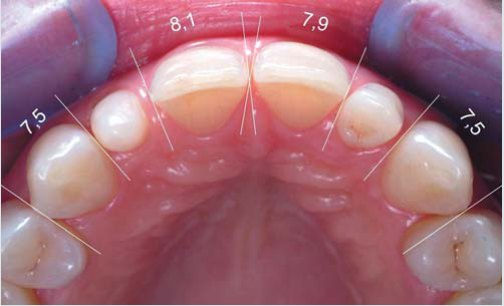
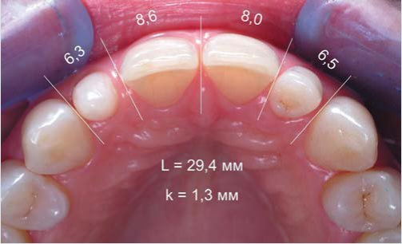
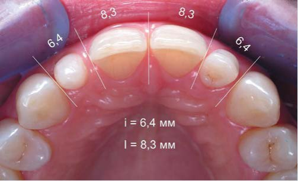
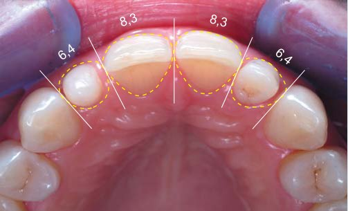
Визначення довжини зубної дуги
Наступним кроком розрахунку фронтальної ділянки верхнього зубного ряду було визначення довжини фронтальної ділянки від ікла до ікла. Для цього штангенциркулем проведено 4 виміри (за кількістю різців): від медіального контакту правого ікла до латерального контакту правого центрального різця — 6,3 мм, далі від латерального контакту правого центрального різця до медіального контакту лівого центрального різця — 8,6 мм, від медіального до дистального контактів лівого центрального різця — 8,0 мм і від латерального контакту лівого центрального різця до медіального контакту лівого ікла — 6,5 мм. Іноді ми змінюємо точки відліку на центральних і латеральних різцях для самоконтролю (це схоже на розв'язування математичного прикладу кількома способами), щоб уникнути помилки в установці штангенциркуля. Сума 4-х вимірів має бути однаковою у кожному визначенні з різними точками відліку.
Підсумувавши дані 4-х вимірів, ми одержали довжину фронтальної ділянки верхнього зубного ряду — L = 29,4 мм, і це менше, ніж стандартна довжина 30 мм, на 0,6 мм. Отже, ця різниця зі стандартом має бути розподілена пропорційно на всі чотири різці відповідно до простору в зубній дузі.
Вибір коефіцієнта пропорційності
Стандартний золотий коефіцієнт співвідношення ширини центральних і латеральних різців становить 1,3, але ми можемо визначити його індивідуальне значення шляхом ділення наявної ширини центрального різця на наявну ширину латерального різця. Також ми можемо змінити золотий коефіцієнт у прийнятних межах, якщо побудова контактів майбутніх різців оптимальної ширини вимагає значних ушкоджень природних зубних тканин (варіанти можливі завжди, але біологічна доцільність втручання неодмінно повинна залишатися на першому місці).
Визначення ширини латеральних різців
Пропорційна ширина латеральних різців визначається за формулою
i = L / k,
де i — ширина латерального різця, L — довжина фронтальної ділянки зубної дуги від ікла до ікла, k — сума золотих коефіцієнтів 4-х різців.2
Довжина фронтальної ділянки зубної дуги відома, сума коефіцієнтів дорівнює 4,6 (1+1,3+1,3+1)…
Поділивши довжину фронтальної ділянки на суму коефіцієнтів 4-х різців, ми отримали значення пропорційної ширини латеральних різців для цього зубного ряду — 6,4 мм (відповідає коефіцієнтові 1).
Отже, i = 6,4 мм.
Зверніть увагу, що розрахована оптимальна ширина коронок латеральних різців практично повністю співпадає з розмірами простору в зубному ряду, призначеного для латеральних різців. Відхилення в 0,1 мм може бути наслідком різної установки штангенциркуля і легко компенсується при відновленні контактних поверхонь. Отже, для відновлення гармонії фронтальної ділянки верхньої зубної дуги досить побудувати коронки латеральних різців в наявному просторі між іклами і центральними різцями… І це клінічне рішення було прийняте на основі розрахунку!
Визначення ширини центральних різців
Визначити оптимальну ширину коронок центральних різців можна, помноживши дані пропорційної ширини латеральних різців на вибраний золотий коефіцієнт — I = i x k. Визначена шляхом розрахунку пропорційна ширина латеральних різців дорівнює 6,4 мм, золотий коефіцієнт — 1,3, похідне становитиме 6,4 мм x 1,3 = 8,3 мм. Тобто, пропорційна ширина центральних різців для цієї зубної дуги дорівнює 8,3 мм.
Отже, I = 8,3 мм.
Перевірка розрахункової ширини різців
На завершення отримані значення ширини латеральних і центральних різців виставили на штангенциркулі і перевірили в зубному ряду на їх реальність (перевірка в порожнині рота дозволяє уникнути елементарної арифметичної помилки, властивої людям епохи калькуляторів). Тепер до роботи під контролем зі штангенциркулем!
Реставрація верхніх ікол
Після відновлення ікол ми, як правило, робимо перерву, щоб перед тим, як перейти до реконструкції латеральних різців, оцінити виконання попереднього етапу «свіжим поглядом».
Оцінка форми на цьому етапі дуже важлива, тому що верхні ікла — основа зубного ряду і за ними як просторовими орієнтирами реставруватимуться різці. Форма ікол дивовижна, оскільки медіальна частина коронки — це продовження вестибулярної і піднебінної поверхонь різців, а латеральна частина коронки вже належить до бічних зубів, і дистальна піднебінна ямка повторює позицію дистального скату вестибулярного горбика першого премоляра. Ось чому так важливо ретельно перевірити форму ікол.
Відновлення форми правого ікла зі стиранням
Механічне препарування ікол проведене поверхнево в ділянках стирання на рвучих горбиках, хімічне препарування виконане ортофосфорною кислотою, поверхні, що реставруються, підготовлені дентинним адгезивом. Форму правого ікла відновлено відтінками дентину, емалі і прозорої емалі.
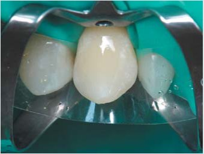
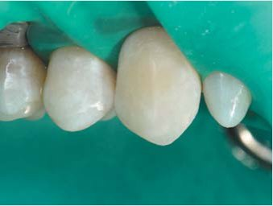
Відновлення форми лівого ікла зі стиранням
Такими ж відтінками відновлено форму лівого ікла в межах втрачених дентину і емалі. Рвучі горбики повернені на звичне місце — на 1 мм медіальніше середньої лінії коронки, і тепер їх положення, позиція зеніту шийки, висота контактних пунктів і форма контактних поверхонь утворюють комплекс ознак кута коронки.
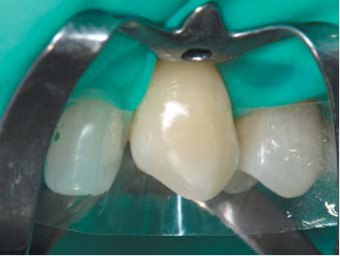
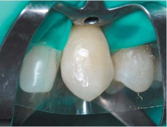
Перевірка довжини відновлених ікол
Довжину відновлених ікол перевірено в оклюзійному дзеркалі за премолярами — в ідеалі премоляри й ікла мають бути в одній площині. Перевірка в оклюзійному дзеркалі допоміжна, а провідний метод досягнення початкової висоти коронок ікол — пошарове відновлення втрачених зубних тканин.
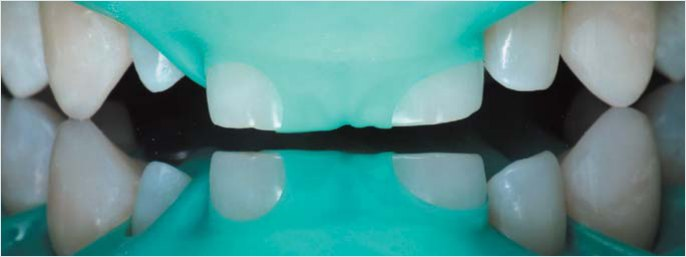
Реконструкція правого латерального різця
Створення форми латеральних різців є реконструкцією, оскільки втраченої форми в цьому клінічному випадку не було, і отримана в результаті реконструкції форма коронок буде нашим креативом. Ми вважаємо, що немає жодної необхідності візуалізувати форму майбутньої коронки за допомогою воскового або композитного моделювання, оскільки усі межі кожної коронки відомі в трьох напрямках.
Для того, щоб отримати і форму, і колір реставрованого зуба, треба уявити собі пошарову внутрішню структуру майбутньої коронки і збудувати зубні тканини, яких бракує, відтінками композиту з відповідними оптичними властивостями. За формою створюваної коронки відомі латеральна поверхня до контакту з іклом, вестибулярна і оральна поверхні верхньої третини коронки. Медіальну поверхню коронки належить побудувати зі створенням ілюзії звичайної ширини коронки в ділянці шийки зуба.
Послідовність реставрації переднього зуба: світлий центр, оральна і вестибулярна поверхні, латеральна і медіальна контактні поверхні.
Адгезивна підготовка і створення світлого центру
Після поверхневого препарування і адгезивної підготовки по медіальній поверхні було відновлено яскравим відтінком підвищеної опаковості контури предентину, що оточують уявну порожнину зуба (строго вертикально, залишаючи простір приблизно 2 мм до латеральної контактної поверхні правого центрального різця).
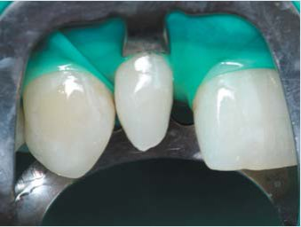
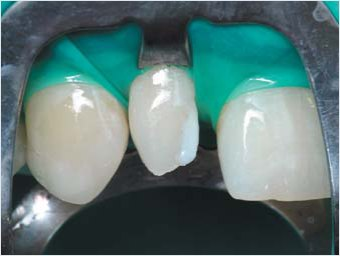
Основний дентин і основна емаль орально
По оральній поверхні опаковим відтінком мікрогібридного композиту відновлено дентин з розширенням шийки в медіальний бік (під захистом жорсткої металевої матриці шийка була доповнена дентиновим відтінком мікрогібридного композиту). Відтінком тіла по оральній поверхні відновлено основну емаль з мамелонами.
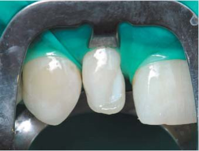
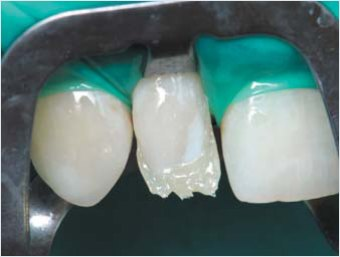
Поверхнева емаль і колони предентину
Прозорим відтінком наногібридного композиту по піднебінних поверхнях ікла і центрального різця, що стоять поруч, відновлено оральну поверхневу емаль. Довжину коронки встановлено на рівні стертого краю центрального різця. Яскравим опаковим відтінком порожнину зуба доповнено імітацією колон предентину, висхідних до ріжучого краю.
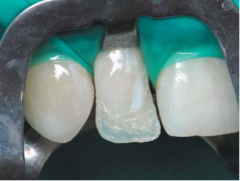
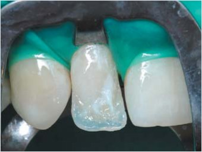
Вестибулярно основний дентин і основна емаль
Вестибулярний дентин виконано тим самим опаковим відтінком мікрогібриду строго вертикально від доповненої шийки зуба. Відтінком тіла нанокомпозиту виконано основну емаль з розширенням на контактні поверхні. По ріжучому краю в шарах дентину і емалі виконані три мамелони з наближенням на 1 мм до ріжучого краю.
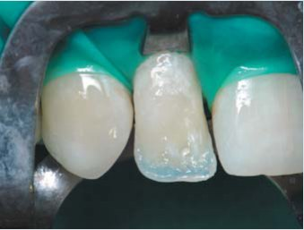
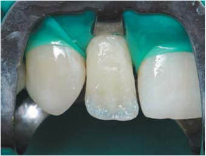
Вестибулярно поверхнева емаль і контакти
Прозорим відтінком нанокомпозиту в основному завершено формування коронки правого латерального різця з невеликим запасом по ріжучому краю для фінішної обробки. Лавсановими попередньо контурованими матрицями з розклинюванням виконано контактні поверхні з прозорого відтінку мікрогібридного композиту.
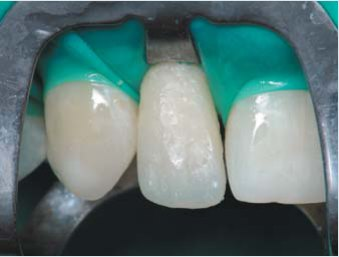
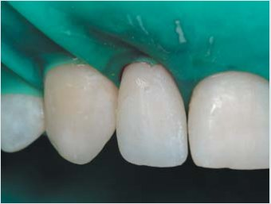
Реконструкція лівого латерального різця
Адгезивна підготовка і основний дентин по центру
Після символічного препарування і адгезивної підготовки коронка лівого латерального різця виконана в такій самій послідовності. Спочатку латеральну поверхню доповнено вузькою смужкою штучного дентину з мікрогібридного композиту, який добре вклеюється і розсіює світло та має оптимальну еластичність.
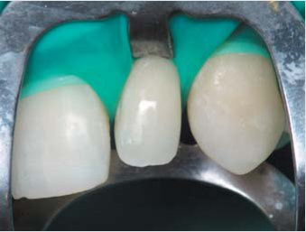
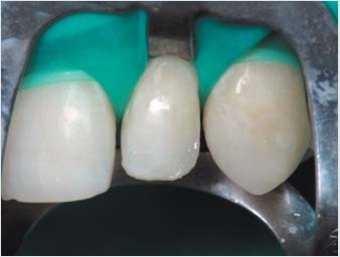
Основна і поверхнева емаль орально
Відтінками тіла і прозорої емалі наногібридного композиту відновлено оральні шари основної і поверхневої емалі. Створення мамелонів у шарі основної емалі — предмет фантазії виконавця, і воно несе небезпеку залишення великої кількості місць для захоплення бульбашок повітря при внесенні прозорого відтінку.
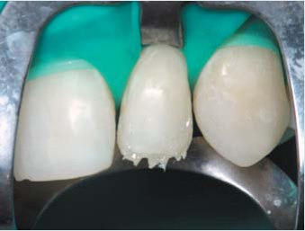
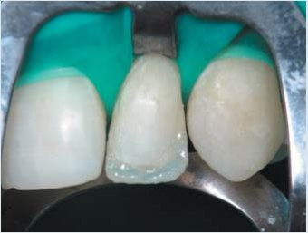
Основна і поверхнева емаль вестибулярно
Вестибулярні шари основної і поверхневої емалі відновлені тими самими відтінками наногібридного композиту. Залишилося доповнити побудовану в основному конструкцію коронки лівого латерального різця прозорими контактними поверхнями і порівняти на екрані комп'ютера форму обох латеральних різців на дзеркальну ідентичність.
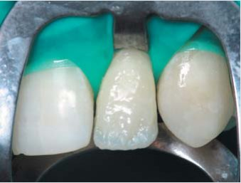
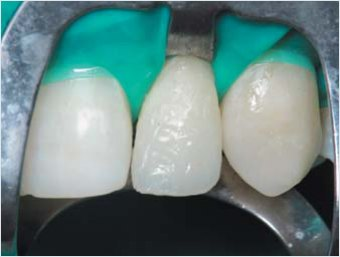
Перевірка довжини латеральних різців
Перевірка в оклюзійному дзеркалі має показати, що ріжучі краї латеральних різців перебувають на однаковій відстані від площини дзеркала, встановленого на верхні премоляри й ікла. Корекція ріжучих країв латеральних різців робиться доти, доки не буде отримано потрібний результат, включаючи форму куточків.
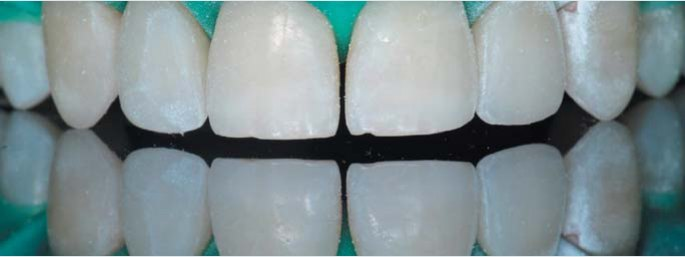
Реконструкція центральних різців
Відновлення контактних поверхонь і ріжучих країв
Після перерви, зробленої після найскладнішого етапу — реконструкції латеральних різців, було відновлено ріжучі краї і контактні поверхні центральних різців — дентиновими, емалевими і прозорими відтінками під контролем штангенциркулем (ширина коронок центральних різців має бути строго однаковою).
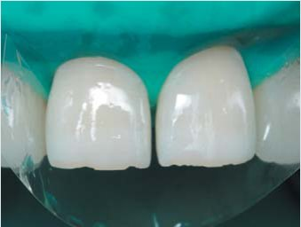
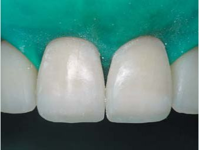
Полірування і контроль реставрації
Після завершення моделювання і зняття рабердаму зроблено контрольні рентгенівські знімки з трьох позицій: прямо з акцентом на центральних різцях, праворуч і ліворуч з акцентом на латеральних різцях. На цих знімках вивчається крайове прилягання реставрацій по шийках зубів: видно, що композит на контактних поверхнях — в межах емалі, при переході на шийки зубів немає виступів і заглиблень. Таке крайове прилягання має перешкоджати ретенції нальоту в під'ясенних ділянках і запобігати розвитку захисного гінгівіту.
Після полірування можна оцінити форму коронок реставрованих і реконструйованих зубів, щільність і гладкість контактних пунктів, крайове прилягання по шийках зубів, а також мікрорельєф поверхні реставрацій. Оскільки більшість поверхні реставрованих зубів становить природна емаль, що не має вираженого мікрорельєфу, то таку ж мікроформу поверхні ми надали штучній частині реставрованих зубів. По ріжучому краю видно невідповідність кольору реставрованої основи і реставрації, що пов'язано з пересиханням зубних тканин у процесі відновлення зубів.
Реставровані зуби після полірування, на рентгенівських знімках і наступного дня
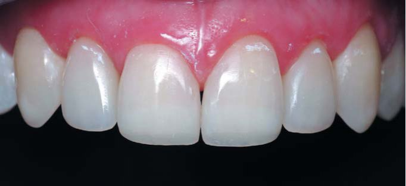
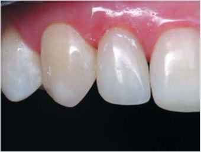
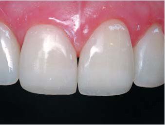
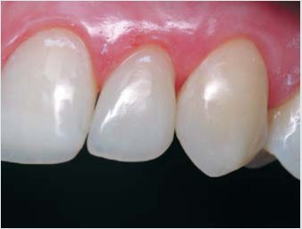
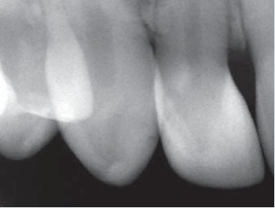
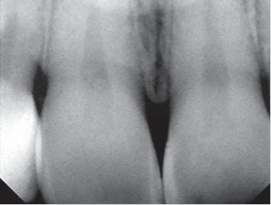
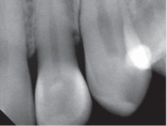
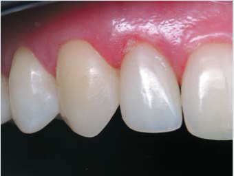
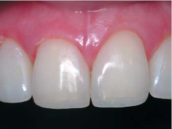
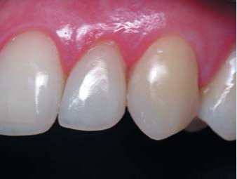
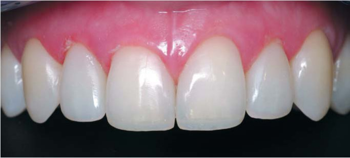
Але пересихання зубних тканин не заважає оцінити симетричність і пропорційність фронтальної ділянки верхнього зубного ряду, отримані за розрахунком з використанням золотих коефіцієнтів. Усі елементи, що становлять фронтальну естетику, присутні необхідною мірою: ікла, латеральні і центральні різці симетричні, центральні і латеральні різці мають вигляд пропорційних і збалансованих один щодо одного, контактні пункти і ріжучі краї утворюють на різній висоті дві криві, що повторюються, куточками ріжучих країв утворені симетричні амбразури...
І лише висока шийка лівого центрального різця або, можливо, низька шийка правого центрального різця вносять у цю просторову гармонію деяку «фальшиву» ноту… Зверніть увагу, що в розбалансованій естетиці до реставрації різниця у висоті шийок центральних різців не була відчутною, але зараз… Якщо ця різниця у висоті шийок виявиться неприйнятною, то виправити ситуацію можна буде резекцією ясенного краю правого центрального різця.
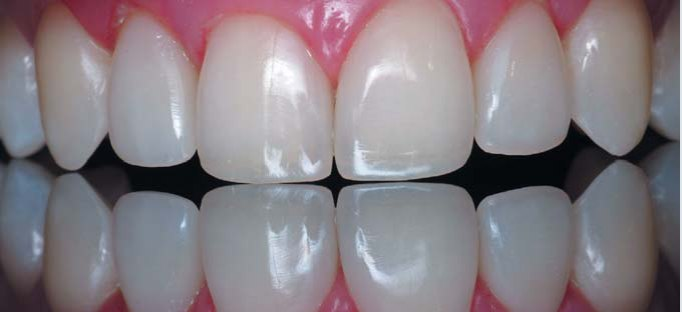
Зображення верхніх передніх зубів в оклюзійному дзеркалі, встановленому на верхні премоляри, підтверджує, що висота коронок центральних різців досягнута правильно, тому що премоляри, ікла і центральні різці перебувають в одній площині, а ріжучі краї латеральних різців — приблизно за 1 мм до неї.
Наступного дня після втручання і добового водопоглинання вже не помітно різниці у кольорі між поверхнею емалі і композиту на всіх реставрованих зубах.
Вид фронтальної ділянки верхнього зубного ряду через 9 місяців
Світлини верхніх передніх зубів зроблено через 9 місяців після відновлення ікол та центральних різців і реконструкції латеральних різців аномальної форми. Упродовж цього часу не проводилися професійна гігієна і полірування зубів, проте поверхня нанокомпозиту демонструє природний блиск (слід врахувати, що пацієнтка сама стоматолог, і звичайно, досягнувши очікуваного естетичного результату, тепер дотримується ретельної гігієни, чого важко домогтися від усіх пацієнтів).
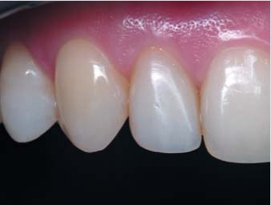
Рахуйте, прораховуйте, розраховуйте зуби і зубні ряди, ця процедура не приносить жодної шкоди пацієнтам і займає мінімум часу. І лише після багаторазового повторення розрахунку зубного ряду у багатьох пацієнтів Ви зможете переконатися, наскільки дивовижна природа і створені нею зуби, і усвідомите, що естетика — це перш за все математика!
Література
- Радлінський С.В., Новіков В.С., Смажило С.М. Ортопедичні аспекти реставрації зубів композитами // М-ли Респ. наук. конф. Актуальні питання стоматології дитячого віку і ортодонтії. – Полтава. – 1993. – С.118-119.
- Радлинский С. Реконструкция зубного ряда // ДентАрт. – 1997. – №3. – С.51-64.
- Радлинский С. Системное восстановление всех зубов при повышенной стираемости // ДентАрт. – 2007. – №3. – С.38-48.
- Радлинский С. Реставрация контактных поверхностей в нижних передних зубах // ДентАрт. – 2008. – №3. – С.27-40.
- Ahmad I. Prosthodontics at Glance. – Oxford: Willey-Blackwell, 2012. – P.57.
- Astakhov A. Harmonious proportion // British Dental Journal. – 2008. – 205. – P.61.
- Bukhary S.M.N., Gill D.S., Tredwin C.J., Moles D.R. The influence of varying maxillary lateral incisor dimensions on perceived smile aesthetics // British Dental Journal. – 2007. – 203. – P.687-693.
- Levin E. I. Dental esthetics and the golden proportion // J Prosthet Dent. – 1978. – 40. – P.244-252.
- Levin E.I. Aesthetic proportions // British Dental Journal. – 2008. – 204. – P.419-420.
- Levin E. Golden additions // British Dental Journal. – 2008. – 205. – P.637.
- Radlinskiy S. Aesthetic deviation // British Dental Journal. – 2009. – 206. – P.447.
- Rufenacht C.R. Fundamental of Esthetics. – Chicago: QuintessencePubl.Co. – 1992. – P.87-92.